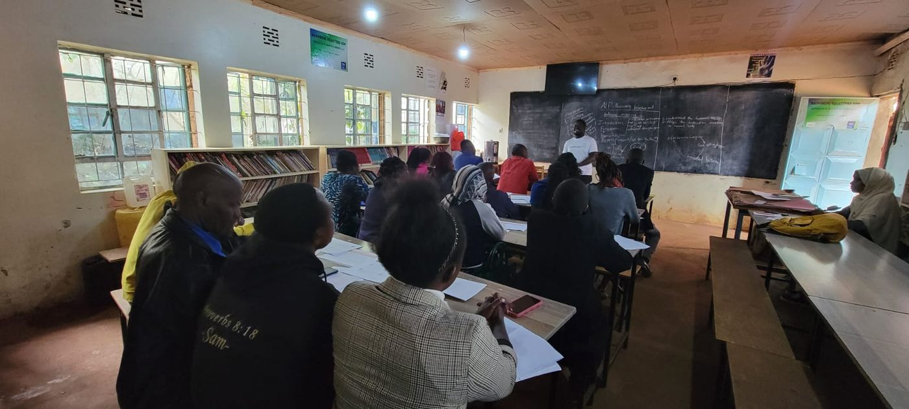

YouthRise ChangeMakers: From a Community Library to a Community-Based Organisation
How a community library in Mathare grew into YouthRise ChangeMakers, reaching 500+ children with three institutional partners.
- Responsibility
- Supervised the Mashimoni SOH library and its clubs from 2015, then co-founded and now direct YouthRise ChangeMakers.
- Scale
- 500+ children over 5+ years, 100+ recurring programmes and clubs, 3 institutional partners.
- Headline result
- A single library became a partner-backed community organisation with digital learning, mentorship and chess pathways.
- Management skills shown
- Partnership development, programme expansion, organisational development, youth mentorship.
Theory of change
Goal: To turn a single community library into a sustainable, partner-backed organisation delivering education, mentorship and extracurricular programming for children in one of Nairobi's most underserved communities.
Intervention pathway: If we combine consistent library access with youth-led clubs, life-skills mentorship and dignity-focused support (monthly sanitary-towel distribution), and then grow the initiative into a community-based organisation with institutional partnerships for digital learning, mentorship and extracurricular pathways, then the organisation can outlive any single funding cycle and reach well beyond what one library could sustain alone.
Situation
Mathare, one of Nairobi's largest informal settlements, offered few safe spaces for structured learning. Young women faced added barriers to consistent school and library participation tied to menstrual health access and safety. A single library run on goodwill had no path to sustain or scale its impact without formal structure and partnerships.
Task
Supervise the Mashimoni SOH library and lead empowerment clubs from 2015, then, from 2019, co-found and direct its expansion into a community-based organisation, now operating as YouthRise ChangeMakers.
Action
- Deliver: Led reading, debate, boys' and girls' clubs, building literacy, confidence and teamwork among youth.
- Deliver: Facilitated life-skills sessions and career mentorship for holistic youth development.
- Design for inclusion: Coordinated monthly sanitary-towel distribution, creating a gender-inclusive, dignified learning space.
- Build the organisation: Co-founded and directed the move from a single library to a community-based organisation, securing three institutional partnerships: ChallengeAid, Education in a Suitcase (the SmileyTutor/tutor-web platform) and Board Lords Chess Club.
- Scale: Grew delivery from a handful of clubs to 100+ recurring programmes and clubs, serving 500+ children over 5+ years.
What I led and what the team delivered
I coordinated the library and its clubs from 2015, then co-founded YouthRise ChangeMakers in 2019 and direct it today. Club sessions are delivered by the wider YouthRise team and volunteers, and the three partnerships belong to the organisation.

Result
- Grew a single library initiative into a partner-backed community-based organisation reaching 500+ children over 5+ years.
- Secured three institutional partnerships providing digital learning tools, mentorship and extracurricular pathways, including chess.
- Board Lords Chess Club, the organisation's own chess programme, now contributes teams to ChallengeAid's broader multi-team Chess Club initiative, which advanced to national-level competition in both 2025 and 2026.
- Sustained a gender-inclusive learning environment, through sanitary-towel distribution and a dedicated Girls Club, as a permanent pillar of the organisation rather than a one-off intervention.
Learnings & sustainability
Community trust built over years, not months, is what let a single library grow into an institution able to attract its own partners instead of depending on one funder. That same foundation later gave multi-site programmes, such as Training-of-Trainers models and EdTech rollouts, community buy-in from day one.